TTA-8 せつめい書 ― 8bit の 小さい CPU を 作って 動かそう
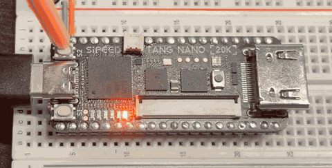
この せつめい書では、命令が 2つ (READ と WRITE) しかない 8bit CPU「TTA-8」 を、 FPGA ボード Tang Nano 20K の 中に 作って 動かします。 小学校 高学年くらいから 読めるように 書いてあります。
もくじ
| 章 | 内容 | こんな人に |
|---|---|---|
| 1. CPU って なんだろう？ | CPU・プログラム・2進数 | はじめての人 |
| 2. TTA-8 の しくみ | READ と WRITE だけで 計算できる ひみつ | CPU の 中を 知りたい人 |
| 3. じゅんびしよう | ボード・ケーブル・道具の 用意 | ボードを 買った人 |
| 4. 動かしてみよう | LED フラッシャーを ボードに 書きこむ | ボードを 光らせたい人 |
| 5. TTA-8 ラボで 中を のぞこう | ブラウザの デバッガの 使いかた | 1命令ずつ 見たい人 |
| 6. TinyBASIC改 で プログラムを 書こう | BASIC の 文法と サンプル | プログラムを 作りたい人 |
| 7. アセンブリで 書いてみよう | READ / WRITE で 直接 書く | CPU の 気持ちに なりたい人 |
| 8. CPU の 設計図を 読もう | Verilog と チューリング完全 | もっと 深く 知りたい人 |
| 9. AI に こうやって たのもう | こまったときの AI への 聞きかた | だれでも |
| 10. つぎの ぼうけんへ | ブレッドボードで 回路を ふやそう | ぜんぶ 読んだ人 |
| ふろく | こまったとき・用語集・大人の方へ | 保護者・先生 |
読みかたの ヒント ボードが まだ なくても、1・2・5・6・7 章は ブラウザだけで ためせます。
このプロジェクトで 使うもの
- Sipeed Tang Nano 20K（FPGA ボード）
- USB ケーブル（データ通信ができるもの。充電専用は ×）
- パソコン（Windows か Mac）
- あれば ブレッドボード（ボードを さして 使うと 安定します）
1. CPU って なんだろう？
CPU は「命令を 1つずつ こなす 係」
ゲーム機、スマホ、パソコン、電子レンジ……。 その 中には CPU（シーピーユー） という 部品が 入っています。
CPU が やることは、じつは とても 単純です。
- つぎの 命令を 読む
- その 命令を やる
- 1 に もどる
これを 1秒間に 何十億回も くりかえしているので、 ゲームが 動いたり、動画が 見られたり するのです。
プログラム とは、CPU に やってほしい 命令を 順番に ならべた ものです。 料理の レシピ みたいな ものですね。
コンピューターの 中は ぜんぶ「数」
CPU は 文字も 絵も 音も、ぜんぶ 数 として あつかいます。 しかも その 数は 0 と 1 だけ で 書かれています。これを 2進数（にしんすう） と いいます。
LED を 6こ ならべて、光っている ところを 1、消えている ところを 0 と すると……
| LED | 2進数 | ふつうの 数 |
|---|---|---|
_____○ |
000001 | 1 |
____○_ |
000010 | 2 |
____○○ |
000011 | 3 |
○_○_○_ |
101010 | 42 |
○○○○○○ |
111111 | 63 |
右はしが 1、そのとなりが 2、つぎが 4、8、16、32 …と、
左へ 行くたびに 2倍 に なります。
101010 は 32 + 8 + 2 = 42 です。
8bit って？
0 か 1 が 入る 1マスを ビット（bit） と いいます。
8bit は 8マス なので、00000000（0）から 11111111（255）まで、
256 とおりの 数 を あらわせます。
この せつめい書で 作る CPU「TTA-8」は、8bit の 数を あつかう CPU です。 255 に 1を たすと、あふれて 0 に もどります（車の メーターが 一周するのと 同じ）。
FPGA は「回路を 書きかえられる チップ」
ふつうの CPU は、工場で 作られた あとは 中身を 変えられません。 でも FPGA（エフピージーエー） という チップは、 設計図を 書きこむと、その とおりの 回路に 変身 します。
Tang Nano 20K に のっている FPGA に、 TTA-8 の 設計図（Verilog という ことばで 書いたもの）を 書きこむと、 FPGA の 中に ほんものの CPU が できあがります。
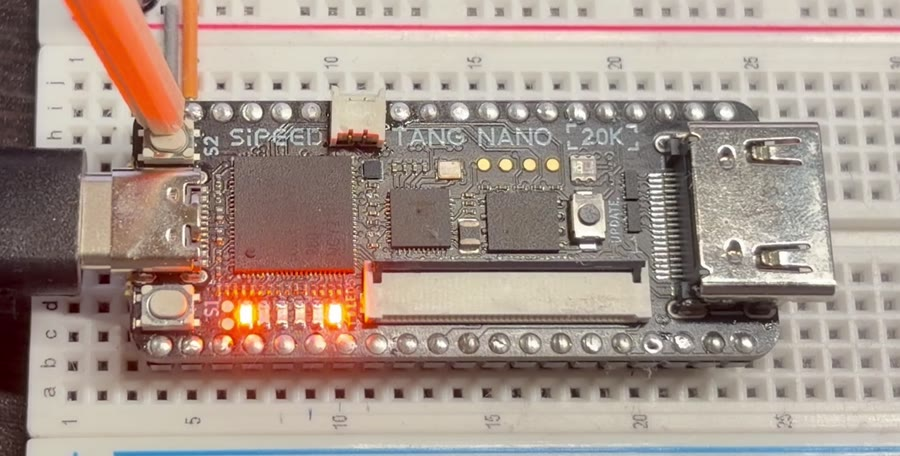
TTA-8 は 1秒に 1000命令 の ゆっくりした CPU です。 ゆっくりなので、LED の 動きを 目で 追いかけることが できます。
2. TTA-8 の しくみ
命令は 2つだけ！
ふつうの CPU には「たし算」「ジャンプ」「比べる」など、 何十〜何百 種類もの 命令が あります。
TTA-8 の 命令は、なんと 2つだけ です。
| 命令 | 読みかた | すること |
|---|---|---|
| READ | よむ | 部品から 数を 1つ 受け取って、V に 入れる |
| WRITE | かく | V に 入っている 数を、部品に わたす |
V（ブイ） は、数を 1つだけ 持てる「はこびや」さんです（レジスタ と いいます）。
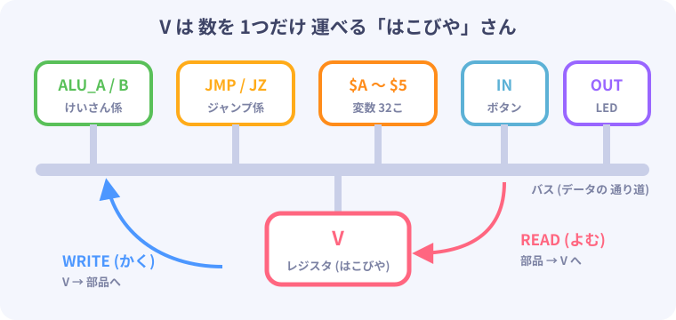
「え、それだけで 計算できるの？」と 思いますよね。 ひみつは 部品の 方が 仕事を する ことです。 けいさん係（ALU）に 数を わたすと、答えが すぐに 用意されます。 V は それを 取りに 行くだけ。 このような CPU を TTA（Transport Triggered Architecture ＝ 運ぶと 動く しくみ） と いいます。
命令の 形
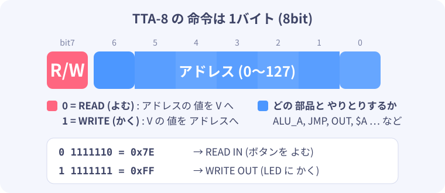
1つの 命令は 8bit（1バイト）です。 いちばん 左の 1bit で READ か WRITE かを えらび、 のこりの 7bit で「どの 部品と やりとりするか」（アドレス）を えらびます。
部品と アドレスの 一覧（アドレスマップ）
| アドレス | 名前 | READ（よむ）と… | WRITE（かく）と… |
|---|---|---|---|
| 0x00 | ALU_A | A の 数 | A に 数を 入れる |
| 0x01 | ALU_B | B の 数 | B に 数を 入れる |
| 0x02 | ALU_ADD | A + B の 答え | ― |
| 0x03 | ALU_NAND | A NAND B の 答え | ― |
| 0x04 | ALU_SUB | A − B の 答え | ― |
| 0x10 | JMP | ― | その 番地へ ジャンプ |
| 0x11 | JZ | ― | A が 0 の ときだけ ジャンプ |
| 0x12 | IMM | 命令の つぎに 書いた 数 | ― |
| 0x20〜0x3F | $A〜$Z、$0〜$5 | 変数の 数 | 変数に 数を 入れる |
| 0x7E | IN | ボタン（S1＝1、S2＝2、両方＝3） | ― |
| 0x7F | OUT | ― | LED に 出す（1 の ビットが 光る） |
0xが ついた 数は 16進数 です。0x10 は 16、0x7F は 127 の ことです。
ALU（エーエルユー） は Arithmetic Logic Unit（算術論理演算装置）の ことで、 CPU の 中で 計算を する 係です。
3 + 5 を 計算してみよう
READ IMM, 3 ; V に 3 を 入れる
WRITE ALU_A ; A = 3
READ IMM, 5 ; V に 5 を 入れる
WRITE ALU_B ; B = 5
READ ALU_ADD ; V = A + B = 8
WRITE OUT ; LED に 8 を 出す → 001000
V が 数を 運んでいるだけなのに、ちゃんと 足し算が できました。
LED には 8（2進数で 001000）が 光ります。
ジャンプも「書くだけ」
CPU は PC（プログラムカウンター） という 番号で「いま 何番目の 命令か」を おぼえています。 ふつうは 1つずつ 進みますが、
- JMP に 書く と、PC が その 数に なります（＝ジャンプ）
- JZ に 書く と、ALU_A が 0 の ときだけ ジャンプします
JZ が あるので「0 に なるまで くりかえす」「ボタンが 押されていたら こっちへ」 といった 判断 が できます。 くわしくは 8章 で、これだけで どんな 計算も できる（チューリング完全）ことを 説明します。
CPU の 中身 まとめ
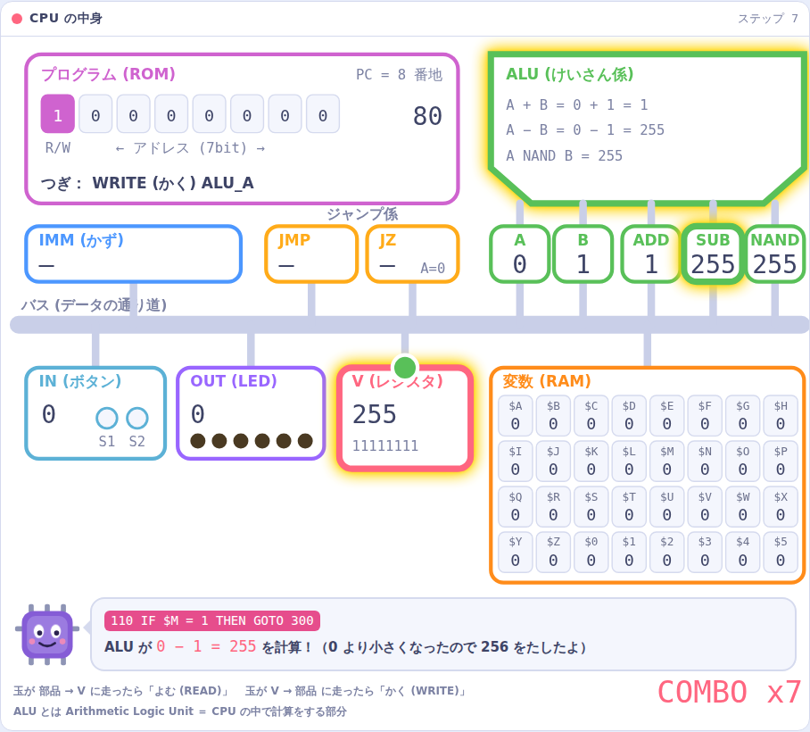
- PC：いま 何番目の 命令か（8bit）
- V：数を 運ぶ はこびや（8bit）
- プログラム（ROM）：命令が 256こ まで 入る
- 変数（RAM）：$A〜$Z と $0〜$5 の 32こ
- ALU：A と B から たし算・ひき算・NAND を 計算
- IN / OUT：ボタンと LED
これで ぜんぶです。CPU の 設計図は、コメントを のぞくと たった 51行 です。
3. じゅんびしよう
用意するもの
| もの | ポイント |
|---|---|
| Sipeed Tang Nano 20K | FPGA ボード。通販で 買えます |
| USB ケーブル（USB-C） | データ通信ができる もの。充電専用だと ボードが 見えません |
| パソコン | Windows 10 / 11 か Mac |
| ブレッドボード（あれば） | ボードを さして おくと 安定します。10章 の ぼうけんにも 使います |
① このプロジェクトを ダウンロードする
- GitHub の このプロジェクトの ページ（https://github.com/tjm8874/TTA-8）を 開く
- 緑の 「Code」 ボタン → 「Download ZIP」
- ZIP を 開いて（展開して）、すきな 場所に おく
中身は こうなっています。
Minimal_CPU/
├ FPGA_Tool/ ← ボードに 書きこむ 道具（ダブルクリックで 使う）
│ ├ Windows/
│ └ Mac/
├ debugger/ ← TTA-8 ラボ（index.html を ブラウザで 開く）
├ hdl/ ← CPU の 設計図（Verilog）と 書きこむ ファイル
├ programs/ ← サンプルプログラム
└ docs/ ← この せつめい書
② ボードの 向きを おぼえよう
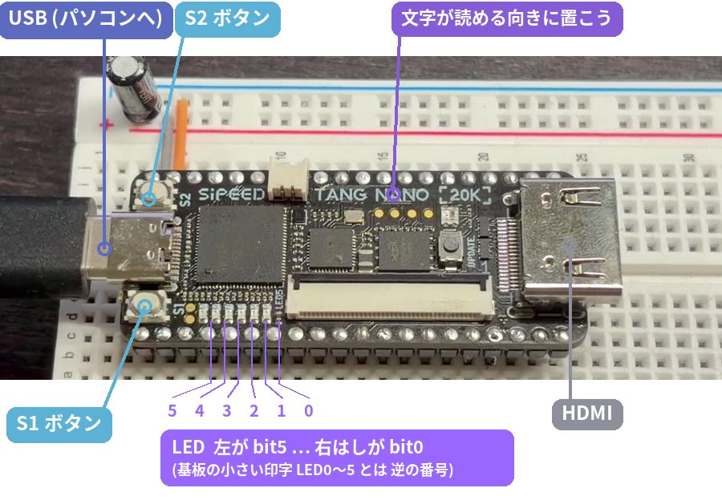
「TANG NANO 20K」の 文字が 読める 向き（USB が 左）で 置きます。
この向きで、LED は 右はしが bit0、左はしが bit5 です。
プログラムで OUT 1 と すると、右はしの LED が 光ります。
基板には 小さく LED0〜LED5 と 印字されていますが、この プロジェクトでは 2進数と 合わせるために 逆の 番号（右はしが 0） を 使います。
③ Windows の じゅんび（はじめに 1回だけ）
FPGA_Tool\Windows を 開きます。
0_setup_driver.bat … USB ドライバの 設定
ボードに 書きこむ 道具（openFPGALoader）が ボードと 話せるように、 Zadig（ザディグ） という 道具で ドライバを 入れかえます。
- ボードを USB で つなぐ
0_setup_driver.batを ダブルクリック → 何か キーを おすと Zadig が 開く- 「このアプリが 変更を 加えることを 許可しますか」→ はい
- メニューの Options → List All Devices に チェック
- リストから USB Debugger (Interface 0) を えらぶ
- 下の USB ID が
0403 6010 00に なっていれば 正解 - Interface 1 は えらばない
- 右がわが WinUSB に なっているのを 確認して Replace Driver
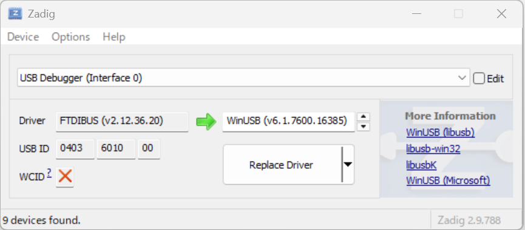
- 「successfully」と 出たら 完了
リストに 出ないときは：「不明な USB デバイス」しか 出ない ときは、 ケーブルが 充電専用 かもしれません。べつの ケーブルに かえるか、 パソコン本体の USB に 直接 さして みてください。
1_check_board.bat … ボードが 見えるか 確認
ダブルクリックして、model GW2A(R)-18(C) と 出れば OK です。
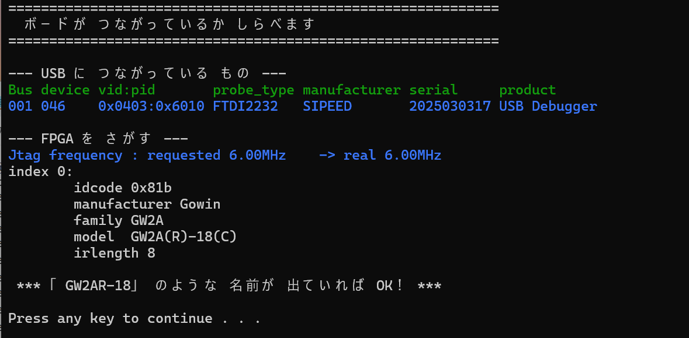
④ Mac の じゅんび（はじめに 1回だけ）
Mac では ドライバの 設定は いりません。
「ターミナル」を 開いて、FPGA_Tool/Mac の 中で つぎを 実行します。
bash 0_setup.sh # openFPGALoader を 入れる（Homebrew が 必要）
bash 1_check_board.sh # ボードが 見えるか 確認
ファイルを ターミナルの 画面に ドラッグ＆ドロップすると、場所を 打たなくて すみます。 Homebrew が ない ときは、9章 の やりかたで AI に 聞いてみよう。
4. 動かしてみよう
書きこみかたは 2しゅるい
| ファイル（Windows / Mac） | どうなる？ | いつ 使う？ |
|---|---|---|
2_write_sram.bat / .sh |
おためし。電源を 切ると 消える | 何度も ためす とき |
3_write_flash.bat / .sh |
ずっと。電源を 切っても のこる | 完成した とき |
さいしょは おためし で やってみましょう。
LED フラッシャーを 書きこもう
- ボードを USB で つなぐ
FPGA_Tool\Windows\2_write_sram.batを ダブルクリック（Mac はbash 2_write_sram.sh）- 「おわり！ LED を 見てみよう」 と 出たら 成功
最初から 入っている hdl/minimal_cpu.fs には、LED フラッシャー の プログラムが 入っています。
ボタンを おしてみよう
| おす ボタン | LED の 動き（0.5秒ごと） |
|---|---|
| なし | 右はしが 点滅 _____○ ⇔ ______ |
| S1 | 光が 右から 左へ 流れる _____○ → ____○_ → … → ○_____ |
| S2 | 外から 内へ ○____○ → _○__○_ → __○○__ |
| S1 と S2 | 交互に 点滅 ○_○_○_ ⇔ _○_○_○ |
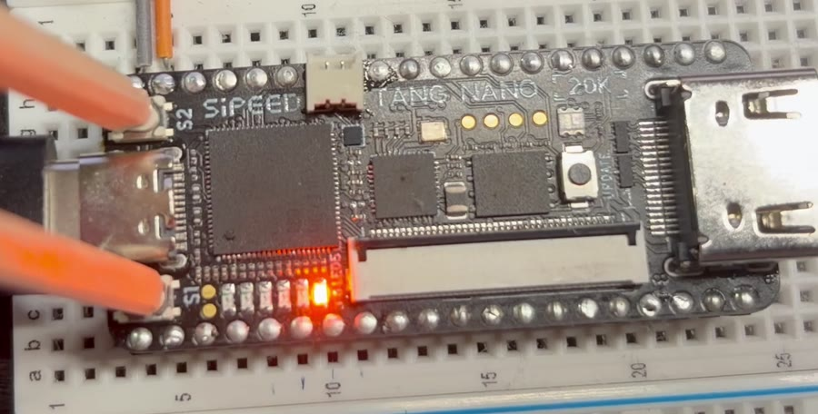
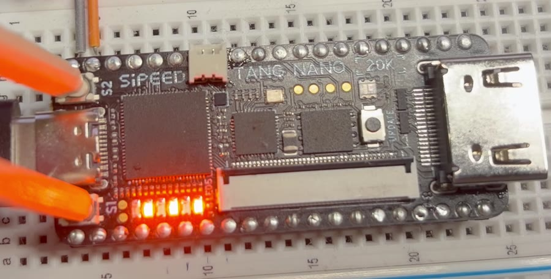
左：なにも おさない とき（右はしが 点滅） 右：S1 と S2 を いっしょに おした とき
電源を 切っても 動くように する
3_write_flash.bat で 書きこむと、USB を ぬいて さしなおしても 同じ プログラムが 動きます。
少し 時間が かかりますが、さいごに Done と おわり！ が 出れば OK です。
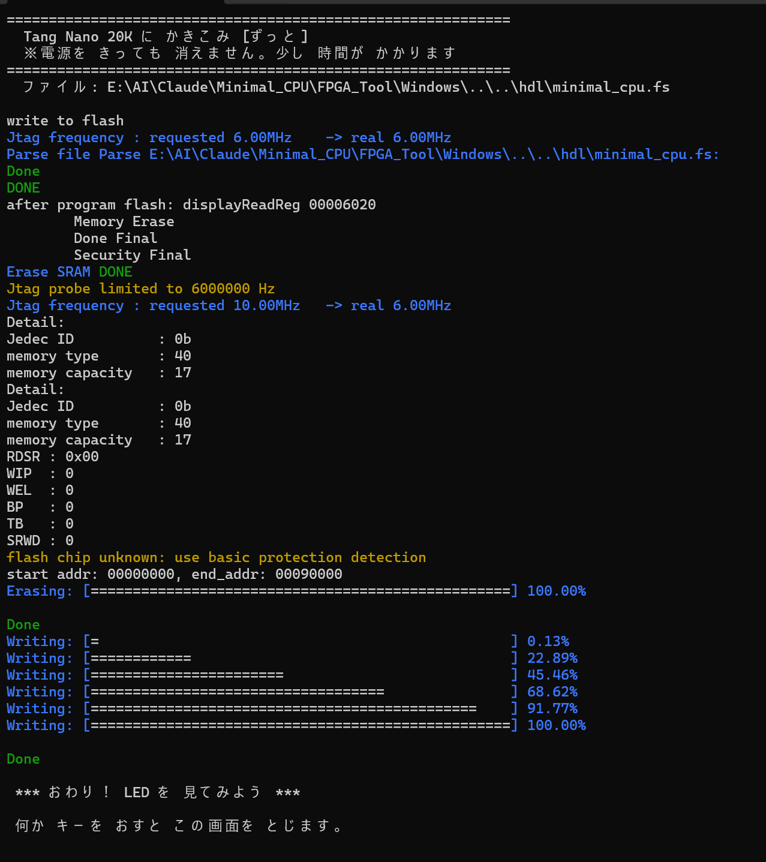
黄色い 文字で
flash chip unknownと 出ますが、問題 ありません。
自分の プログラムを 書きこむには
ボードの 中身は CPU（Verilog）＋ プログラム（program.hex） で できています。 プログラムを 変えたら、CPU と いっしょに くみたて直す（ビルドする） ひつようが あります。
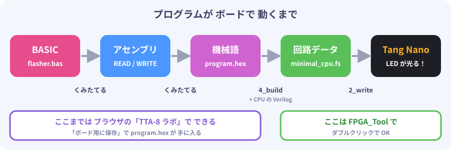
- 5章 の TTA-8 ラボ で プログラムを 作り、「ボード用に保存」 を おす →
program.hexが 保存される program.hexを4_build.batの 上に ドラッグ＆ドロップ（Mac はbash 4_build.sh program.hex）- 自動で
hdl/program.hexに コピーされて、ビルドが 始まります - はじめての ときだけ、ビルド道具（OSS CAD Suite、約600MB）を ダウンロードします
- 「できた！」 と 出たら、
2_write_sram.batで 書きこむ
5. TTA-8 ラボで 中を のぞこう
TTA-8 ラボ は、ブラウザで 動く TTA-8 の デバッガです。 ボードが なくても、CPU の 中で 何が 起きているかを 1命令ずつ 見られます。
debugger/index.html を ダブルクリックすると、ブラウザで 開きます（インターネットは いりません）。
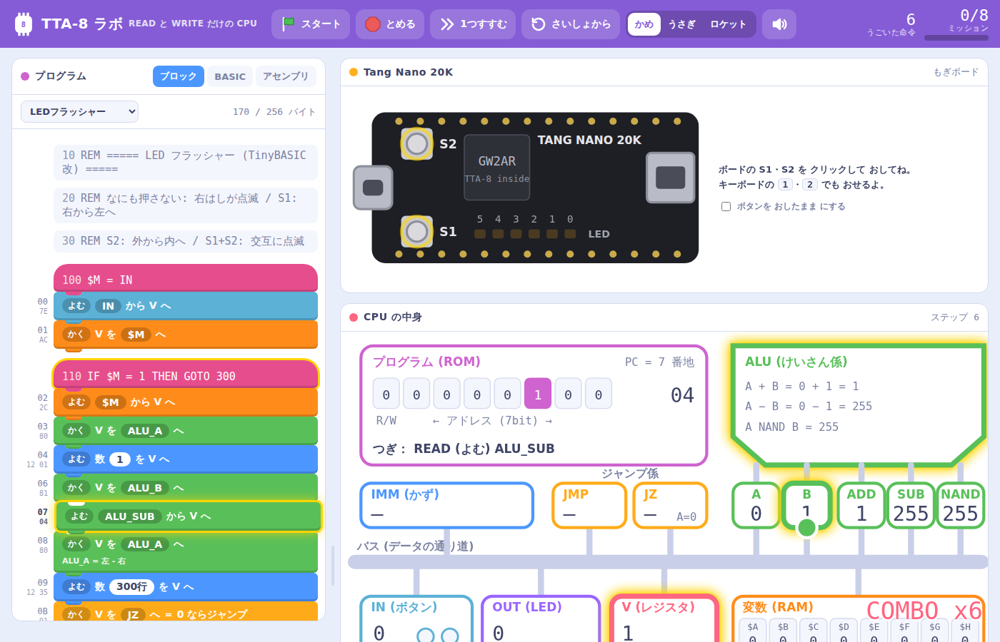
画面の 見かた
| 場所 | 見えるもの |
|---|---|
| 左：プログラム | ブロック・BASIC・アセンブリの 3つの 見かたで プログラムを 表示 |
| 右上：もぎボード | Tang Nano 20K の まね。S1・S2 を クリックで おせる |
| 右中：CPU の 中身 | PC・V・ALU・変数・IN・OUT が いまの 値と いっしょに 見える |
| 右下：ミッション | クリアすると ほしが もらえる |
動かしかた
| ボタン | キー | すること |
|---|---|---|
| スタート（みどりの旗） | スペース | 動かす |
| とめる | 止める | |
| 1つすすむ | → | 1命令だけ 進める |
| さいしょから | リセット | |
| かめ / うさぎ / ロケット | 速さ。ロケット は 本物の ボードと 同じ 1秒に 1000命令 |
1つすすむ を おすと、V が 部品から 部品へ 数を 運ぶ ようすが、 バス（データの 通り道）を 走る 玉で 見えます。
- 玉が 部品 → V に 走ったら READ（よむ）
- 玉が V → 部品 に 走ったら WRITE（かく）
キャラクターが「いま 何を したか」を ことばで 教えてくれます。
もぎボード
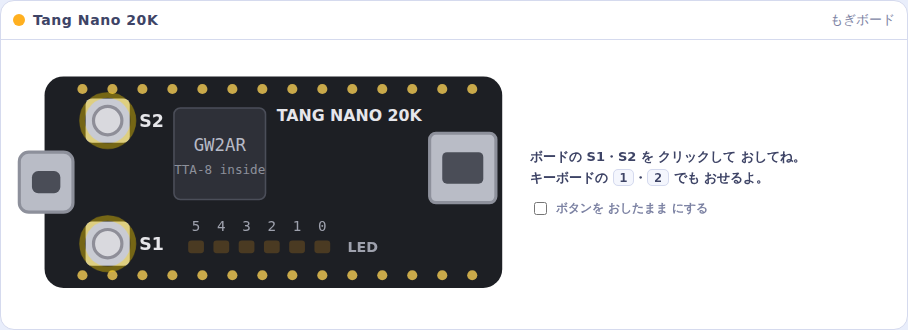
本物の ボードと 同じ 向き・同じ 位置に、S1・S2・LED が あります。 キーボードの 1・2 でも ボタンを おせます。 「ボタンを おしたまま にする」に チェックすると、両方を おしたままに できます。
ブレークポイント
プログラムの 行の 左はしを クリックすると、そこで 止まる しるし（ブレークポイント）が つきます。 ロケットで 走らせて、気になる ところで 止めてみましょう。
ミッション
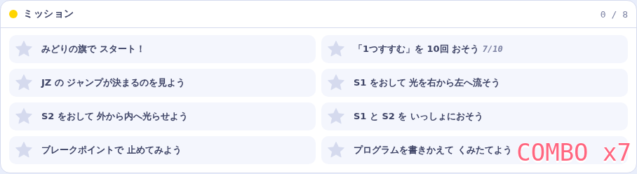
「1つすすむを 10回 おそう」「JZ の ジャンプが 決まるのを 見よう」など、8つの ミッションが あります。 ぜんぶ クリアできるかな？
プログラムを 書きかえる
- BASIC タブ → かきかえる → 書きかえて くみたてる
- アセンブリ タブ → 書きかえて くみたてる
- できたら ボード用に保存 で
program.hexを 保存 → 4章 の やりかたで ボードへ
6. TinyBASIC改 で プログラムを 書こう
TinyBASIC改 は、TTA-8 のために 作った 小さな BASIC です。 パソコン（ブラウザ）の 上で、TTA-8 の 命令（READ / WRITE）に 翻訳されます。
はじめての プログラム
10 REM ===== はじめての たし算 =====
20 $A = 3
30 $B = 5
40 $C = $A + $B
50 OUT $C
60 END
- 1行ずつ 行番号（10, 20, 30 …）から 書きます
$Aは 変数（数を 1つ しまっておく 箱）OUTで LED に 出します。8 は001000と 光りますREMの うしろは メモ（プログラムには 関係 ありません）
変数と 数
| もの | 書きかた | せつめい |
|---|---|---|
| 変数 | $A〜$Z、$0〜$5 |
ぜんぶで 32こ。0〜255 の 数が 1つ 入る |
| 数 | 12、0b101010、0x2A |
10進・2進・16進。0〜255 |
255 を こえると 0 に もどり、0 より 小さく なると 255 の ほうへ まわります（8bit だから）。
計算
| 書きかた | 意味 |
|---|---|
$A + 1 |
たし算 |
$A - 1 |
ひき算 |
$A AND 0b000111 |
どちらも 1 の ビットだけ 1 |
$A OR 0b100000 |
どちらかが 1 の ビットは 1 |
$A NAND $B |
AND の 反対 |
IN |
ボタン（S1＝1、S2＝2、両方＝3） |
左から 順に 計算します（かっこは 使えません）。
命令の 一覧
| 命令 | 例 | 意味 |
|---|---|---|
| 代入 | $A = $B + 1 |
変数に 入れる |
OUT |
OUT 0b000001 |
LED に 出す（右はしが bit0） |
IF … THEN |
IF $M = 1 THEN GOTO 300 |
同じ なら THEN の あとを やる |
IF IN <> $M THEN GOTO 100 |
ちがう なら THEN の あとを やる | |
GOTO |
GOTO 100 |
その 行へ とぶ |
GOSUB / RETURN |
GOSUB 900 |
その 行へ 行って、RETURN で もどってくる |
WAIT |
WAIT 50 |
50 × 0.01秒 ＝ 0.5秒 まつ |
POKE / PEEK |
POKE 127, 5 |
アドレスに 直接 書く / 読む |
END |
END |
おわり |
REM |
REM メモ |
メモ |
: で 区切ると、1行に いくつも 書けます（例：$L = 1 : GOSUB 900）。
ためしてみよう
LED で 2進数カウンター
10 REM ===== LED で 2進数カウンター =====
20 $C = 0
30 OUT $C
40 WAIT 50
50 $C = $C + 1
60 GOTO 30
0.5秒ごとに 1ずつ ふえて、LED が 2進数で 数えます。63 の つぎは？ 考えてから ためしてみよう。
かけ算 6 × 7
TTA-8 には かけ算の 部品が ありません。でも たし算を くりかえせば できます。
10 REM ===== かけ算 6 x 7 (たし算のくりかえし) =====
20 $A = 6 : $B = 7 : $C = 0
30 IF $B = 0 THEN GOTO 70
40 $C = $C + $A
50 $B = $B - 1
60 GOTO 30
70 OUT $C
80 END
答えの 42 は 101010。LED が 1つおきに 光ります。
LED フラッシャー（ボードに 入っている もの）
programs/basic/flasher.bas を TTA-8 ラボの サンプルから えらんで、中を 読んでみましょう。
IN で ボタンを 読んで、IF で 模様を えらんでいます。
できないこと と その かわり
| できないこと | かわりの 方法 |
|---|---|
< > で 比べる |
<>（ちがう）を 使って くりかえす |
かっこ ( ) |
式を 2行に 分ける |
GOSUB の 中で GOSUB |
もどり先を 1つしか おぼえられない |
PRINT（文字を 出す） |
画面が ないので LED に OUT する |
くわしい 文法は TinyBASIC改 文法書 を 見てね。
7. アセンブリで 書いてみよう
BASIC は 便利ですが、CPU が ほんとうに やっているのは READ と WRITE だけ です。 その 命令を 直接 書く ことばを アセンブリ と いいます。 TTA-8 ラボの アセンブリ タブで 書けます。
書きかた
; セミコロンの あとは メモ
LABEL: READ 名前 ; 名前の 部品から V へ
WRITE 名前 ; V から 名前の 部品へ
READ IMM, 数 ; 数を そのまま V へ（2バイト 命令）
READ IMM, LABEL ; LABEL の 番地を V へ（ジャンプ先に 使う）
| READ できる 名前 | WRITE できる 名前 |
|---|---|
ALU_A ALU_B ALU_ADD ALU_NAND ALU_SUB IN IMM 変数 |
ALU_A ALU_B JMP JZ OUT 変数 |
変数は $A〜$Z、$0〜$5 です。
ジャンプの しかた
ジャンプは「行き先の 番地を V に 入れて、JMP に 書く」の 2命令です。
READ IMM, LOOP ; V = LOOP の 番地
WRITE JMP ; PC = V → LOOP へ ジャンプ！
もし 0 なら ジャンプ は、先に ALU_A に 調べたい 数を 入れておいて、JZ に 書きます。
READ $N
WRITE ALU_A ; ALU_A = $N
READ IMM, DONE
WRITE JZ ; ALU_A が 0 なら DONE へ。0 でなければ 次の 行へ
れんしゅう：5 から 0 まで カウントダウン
; 5 から 0 まで 数えて LED に出す
READ IMM, 5
WRITE $N ; $N = 5
LOOP: READ $N
WRITE OUT ; LED に $N を出す
WRITE ALU_A ; ALU_A = $N
READ IMM, DONE
WRITE JZ ; ALU_A が 0 なら DONE へ
READ IMM, 1
WRITE ALU_B ; ALU_B = 1
READ ALU_SUB ; V = $N - 1
WRITE $N ; $N = V
READ IMM, LOOP
WRITE JMP ; LOOP へ もどる
DONE: READ IMM, DONE
WRITE JMP ; ずっと 足ぶみ
TTA-8 ラボに 貼りつけて くみたてる → かめ の 速さで スタート。
LED が 5（000101）→ 4 → 3 → 2 → 1 → 0 と 変わって 止まれば 成功です。
ポイント：
WRITE OUTの あと、V の 中身は 変わらないので、 そのままWRITE ALU_Aできます。V を じょうずに 使いまわすのが アセンブリの コツです。
チャレンジ
- 0 から 5 まで 数え上げる ように 書きかえよう（ヒント：ALU_ADD と、5 を ひいて 0 か 調べる）
- BASIC で 書いた
$C = $A + $Bが どんな アセンブリに なるか、TTA-8 ラボの アセンブリ タブで 見てみよう ALU_NANDだけでANDを 作れるかな？（ヒント：NAND を 2回）
8. CPU の 設計図を 読もう
TTA-8 の 設計図は hdl/tta8.v に あります。
Verilog（ベリログ） という、回路を 書くための ことばで 書かれています。
コメントを のぞくと 51行。いっしょに 読んでみましょう。
① 部品を 用意する
reg [7:0] rom [0:255]; // プログラム 256バイト
initial $readmemh("program.hex", rom);
reg [7:0] pc; // いま 何番目の 命令か
reg [7:0] v; // V : たった1つのレジスタ
reg [7:0] alu_a, alu_b; // ALU に 入れる数
reg [7:0] ram [0:31]; // 変数 $A-$Z, $0-$5
reg [7:0] は「8bit の 箱」という 意味です。
program.hex を ROM に 読みこんでいます。
② 命令を 分ける
wire [7:0] inst = rom[pc]; // いまの 命令
wire write = inst[7]; // いちばん左の bit : 0=READ 1=WRITE
wire [6:0] addr = inst[6:0]; // のこり 7bit : アドレス
2章 の 命令の 形 そのままです。
③ READ したら 何が 読めるか
case (addr)
7'h00: rdata = alu_a; // ALU_A
7'h01: rdata = alu_b; // ALU_B
7'h02: rdata = alu_a + alu_b; // ALU_ADD
7'h03: rdata = ~(alu_a & alu_b); // ALU_NAND
7'h04: rdata = alu_a - alu_b; // ALU_SUB
7'h12: rdata = rom[pc + 8'd1]; // IMM (次の1バイト)
7'h7E: rdata = {6'b0, btn}; // IN
default: rdata = is_ram ? ram[addr[4:0]] : 8'h00;
endcase
ALU は ここだけ です。+ - & ~ を 書くだけで、FPGA が 計算回路を 作ってくれます。
④ 1命令を 実行する
pc <= pc + 8'd1; // ふつうは 次へ
if (!write) begin // ===== READ
v <= rdata;
if (addr == 7'h12) pc <= pc + 8'd2; // IMM は 定数を とばす
end else begin // ===== WRITE
case (addr)
7'h00: alu_a <= v; // ALU_A
7'h01: alu_b <= v; // ALU_B
7'h10: pc <= v; // JMP
7'h11: if (alu_a == 0) pc <= v; // JZ (ALU_A が 0 なら)
7'h7F: led <= v[5:0]; // OUT
default: if (is_ram) ram[addr[4:0]] <= v;
endcase
end
- READ なら
v <= rdata（部品 → V） - WRITE なら
○○ <= v（V → 部品） - JMP は「PC に 書く」だけ。JZ は「A が 0 なら PC に 書く」だけ
CPU の 動きが、ほとんど そのまま 書いてあるのが わかりますね。
⑤ ボードと つなぐ（top_tangnano20k.v）
hdl/top_tangnano20k.v は、ボードと CPU を つなぐ ファイルです。
- ボードの 時計（27MHz ＝ 1秒に 2700万回）を 数えて、1秒に 1000回 だけ CPU を 進める
- ボタンの 信号を 時計に そろえる
- LED は 0 で 光る 回路なので、反対（
~led）に して つなぐ
どの ピンに つなぐかは hdl/tangnano20k.cst に 書いてあります。
⑥ チューリング完全って？
「どんな 計算でも（時間と メモリさえ あれば）できる」ことを チューリング完全 と いいます。 スマホの CPU も スーパーコンピューターも チューリング完全です。
TTA-8 で できることを ならべると……
- 変数に 1 を たす（ALU_ADD）
- 変数から 1 を ひく（ALU_SUB）
- 変数が 0 か どうかで ジャンプ する（JZ）
じつは この 3つが あれば「カウンター機械（ミンスキー機械）」という 計算の しくみを 作れて、 それは チューリング完全だと 数学で 証明されています。 だから TTA-8 も（メモリが 256バイトまで という 点を のぞけば）チューリング完全 です。
かけ算も、わり算も、ぜんぶ「たす・ひく・0 で ジャンプ」の くみあわせで 作れます。 6章 の かけ算 6 × 7 が その 例です。
9. AI に こうやって たのもう
こまったときは、AI（Claude や ChatGPT、Gemini など）に 聞いてみましょう。 じょうずに 聞く コツ は 3つです。
- 何を しようとしているか を 書く
- 何が 起きたか（エラーの 文字や 画面）を そのまま 見せる
- 自分の パソコン（Windows か Mac か）を 書く
そのまま 使える たのみかた
じゅんびで こまったとき
Tang Nano 20K という FPGA ボードに、openFPGALoader で 書きこもうとしています。
パソコンは Windows 11 です。
1_check_board.bat を 動かしたら、下の 文字が 出ました。どうすれば いいですか？
（ここに 黒い画面の 文字を 貼る）
Mac に Homebrew を 入れたいです。小学生にも わかるように、
ターミナルで 何を 打てば いいか 1つずつ 教えてください。
プログラムを 作りたいとき
AI は TinyBASIC改 を 知りません。文法書を いっしょに わたす のが コツです。
下の 文法の「TinyBASIC改」で、LED 6こ を 使った プログラムを 書いてください。
S1 を おしたら LED が 左から 右へ 流れるように したいです。
LED は 右はしが bit0 です。1命令 0.001秒 の CPU です。
（ここに docs/tinybasic.md の 中身を 貼る）
この TinyBASIC改 の プログラムで、LED が 思った とおりに 光りません。
やりたいこと：（ここに 書く）
プログラム：（ここに 貼る）
TTA-8 ラボで 動かすと、（ここに 起きたことを 書く）
しくみを 知りたいとき
TTA-8 という、命令が READ と WRITE だけの CPU を 勉強しています。
「JZ に 書くと ALU_A が 0 の ときだけ ジャンプする」の 意味を、
小学5年生に わかるように たとえ話で 説明してください。
hdl/tta8.v の この 部分が わかりません。1行ずつ 説明してください。
（ここに Verilog を 貼る）
改造したいとき
TTA-8 の Verilog（下に 貼ります）に、ブザーを 鳴らす 出力を 1つ 足したいです。
アドレス 0x7D に 書くと、ブザーの ON/OFF が 変わるように したいです。
Tang Nano 20K の どの ピンに つなげば いいかも 教えてください。
（ここに hdl/tta8.v と hdl/top_tangnano20k.v を 貼る）
気をつけること
- AI の 答えが まちがっている ことも あります。TTA-8 ラボで ためして、動くか 確かめよう
- 名前・住所・パスワード などは 書かないこと
- わからない ところは「もっと かんたんに」「たとえ話で」と たのみなおして OK
10. つぎの ぼうけんへ
ここまで 読んだ キミは、
- CPU が 命令を 1つずつ こなす しくみ
- READ と WRITE だけ でも 計算・判断・くりかえしが できる こと
- その CPU を FPGA の 中に 作って 動かす 方法
を 知っています。これは 大人の エンジニアでも しっかり 説明できる 人が 少ない ことです。
ブレッドボードで 回路を ふやそう
Tang Nano 20K の まわりには、たくさんの ピン（足） が ならんでいます。 ブレッドボードに させば、ボードの 外がわに いろいろな 回路を つなげられます。
| つなぐもの | できること | TTA-8 の 改造アイデア |
|---|---|---|
| LED を もっと | 8こ、16こ の イルミネーション | OUT を 8bit に ふやす |
| ボタン・スイッチ | 入力を ふやす | IN に ビットを 足す |
| ブザー | 音を 鳴らす | 新しい アドレスに「音」の 部品を 作る |
| 7セグメント LED | 数字を 表示する | 変数の 中身を 数字で 見る |
| モーター・サーボ | ものを 動かす | ロボットの 頭脳に する |
| 温度・光センサー | まわりの ようすを 読む | センサーの 値で LED の 色を 変える |
TTA-8 に 部品を 足すのは かんたんです。 新しい アドレスを 決めて、READ か WRITE で つなぐだけ。 それが TTA（運ぶと 動く しくみ）の いいところです。
回路を つなぐ ときは、USB を ぬいてから。 Tang Nano 20K の ピンは 3.3V です。5V の 部品を つなぐ ときは 大人と いっしょに 調べよう。
チャレンジ リスト
- ☐ LED フラッシャーに 新しい 模様を 足す
- ☐ 2進数カウンターを 0.1秒ごとに する
- ☐ かけ算の 答えが 63 を こえたら どうなるか 予想して ためす
- ☐ ALU に「かけ算」の 部品を 足して、アドレス 0x05 で 読めるように する
- ☐ ブザーを つないで、ボタンで ドレミを 鳴らす
- ☐ 自分で 考えた 命令セットの CPU を 作る
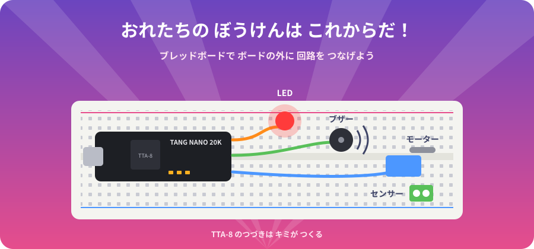
ブレッドボードが あれば、このボードの 外がわに 色々な 回路を 付けられる。
おれたちの ぼうけん（電子工作）は これからだ！
ふろく
A. こまったとき
| こまったこと | ためすこと |
|---|---|
| Zadig に「不明な USB デバイス」しか 出ない | 充電専用ケーブルかも。データ通信できる ケーブルに かえる／パソコン本体の USB に さす／USB-A ⇔ USB-C ケーブルを ためす |
1_check_board で ボードが 見つからない |
0_setup_driver を やったか 確認。Interface 0 を WinUSB に したか 確認 |
| 書きこめたのに LED が 動かない | もう一度 2_write_sram を ためす。USB を さしなおす |
| なにも おしてないのに LED が 交互に 点滅 | ボタンの 向きの 設定が 逆。hdl/top_tangnano20k.v の BTN_ACTIVE_LOW を 変える（Tang Nano 20K は 0 で 正しい） |
| 光る 向きが 左右 逆 | ボードの 向きを 確認（「TANG NANO 20K」が 読める 向き） |
4_build の ダウンロードが 止まる |
インターネット接続を 確認して もう一度。社内・学校の ネットワークでは 止められることも |
| TTA-8 ラボで「くみたて失敗」 | 下の 赤い 文字を 読む。わからなければ 9章 の やりかたで AI に 聞く |
| Windows で 文字が 化ける | Windows 10 の 古い版では 起きることが あります。Windows Update を してみてください |
B. 用語集
| ことば | 意味 |
|---|---|
| CPU | 命令を 1つずつ こなす 部品 |
| FPGA | 設計図を 書きこむと その回路に なる チップ |
| ビット（bit） | 0 か 1 が 入る 1マス |
| バイト | 8ビット。0〜255 |
| 2進数 / 16進数 | 0と1だけの 数 / 0〜9 と A〜F の 数（0x を つける） |
| レジスタ | CPU の 中の 小さな 箱。TTA-8 では V |
| PC（プログラムカウンター） | いま 何番目の 命令かを おぼえる 箱 |
| ALU | 計算を する 係 |
| アドレス | 部品や メモリの 番号 |
| ROM / RAM | プログラムを しまう ところ / 変数を しまう ところ |
| バス | データの 通り道 |
| アセンブリ | CPU の 命令を そのまま 書く ことば |
| コンパイル | BASIC などを 機械語に 翻訳する こと |
| Verilog | 回路を 書く ことば |
| ビルド | Verilog と プログラムから 書きこみ用 ファイルを 作る こと |
| チューリング完全 | どんな 計算でも できる こと |
C. 大人の方へ（保護者・先生・開発者）
構成
| パス | 内容 |
|---|---|
hdl/tta8.v |
CPU 本体（コメント除き 51 行） |
hdl/top_tangnano20k.v |
ボード用トップ（27MHz → 1kHz ステップ、ボタン同期、LED 反転） |
hdl/tangnano20k.cst |
ピン割り当て（LED は bit0 = pin 20 … bit5 = pin 15 に反転） |
hdl/program.hex |
ROM 初期値（256 行の 16 進） |
hdl/minimal_cpu.fs |
ビルド済みビットストリーム（LED フラッシャー） |
tools/ |
tta8asm.js（アセンブラ）、tbasic.js（TinyBASIC改 コンパイラ）、tta8sim.js（エミュレータ）、test.js |
debugger/ |
TTA-8 ラボ（src/lab.html を build.py で index.html に 1 ファイル化） |
FPGA_Tool/ |
書き込み・ビルド用スクリプト、openFPGALoader（Windows 版同梱）、Zadig |
sim/tb_flasher.v |
iverilog 用テストベンチ |
docs/architecture.md / docs/tinybasic.md |
仕様書・文法書 |
コマンドラインでのビルド
OSS CAD Suite（yosys / nextpnr-himbaechel / apicula）を使います。FPGA_Tool/*/4_build と同じ内容です。
cd hdl
yosys -p "scratchpad -set abc9.xaiger 1; read_verilog top_tangnano20k.v tta8.v; synth_gowin -top top_tangnano20k -json build/top.json"
nextpnr-himbaechel --json build/top.json --write build/pnr.json \
--device GW2AR-LV18QN88C8/I7 --vopt family=GW2A-18C --vopt cst=tangnano20k.cst
gowin_pack -d GW2A-18C -o minimal_cpu.fs build/pnr.json
openFPGALoader -b tangnano20k minimal_cpu.fs # SRAM
openFPGALoader -b tangnano20k -f minimal_cpu.fs # Flash
scratchpad -set abc9.xaiger 1 は、Windows 版 OSS CAD Suite（2026-09-29）で ABC9 が XAIGER2 の読み込み時にアサーションで落ちる問題の回避策です（旧 XAIGER 経路を使う）。
使用リソース：LUT4 約 700 / 20,736（3%）、DFF 110。ROM は LUT で構成しています。
プログラムのコンパイル（Node.js）
node tools/tbasic.js programs/basic/flasher.bas # → .asm / .hex / .lst
node tools/tta8asm.js programs/flasher.asm # → .hex / .lst
node tools/test.js # コンパイラのテスト
Gowin 公式ツールを使う場合
Gowin EDA（Education 版）でも hdl/*.v と hdl/tangnano20k.cst からビルドできます。
ただし Zadig で WinUSB に置き換えた後は Gowin Programmer から認識しにくくなります。
戻すときはデバイスマネージャーで該当デバイスのドライバを削除して再接続してください。
動作確認
2026-09-29、実機（Tang Nano 20K）で SRAM・Flash 書き込みとも、 なし／S1／S2／S1+S2 の全モードの動作を確認しています。